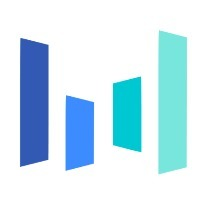

ByteDance
前端工程师 · 移动端与跨端任职于字节跳动抖音电商，负责核心购物与内容场景的前端开发，专注于用户体验优化、电商功能交付和 Web 性能提升。
React Native
Android
前端工程师
我把复杂业务、跨端体验和工程系统，整理成稳定、清晰、可增长的前端产品。
我是一名前端工程师，主要经历集中在电商消费者业务。相比单纯完成页面，我更关注如何把业务目标、产品体验、跨端渲染、性能稳定和工程效率放在同一个问题里解决。
过去几年，我在 ByteDance 参与抖音电商相关工作，覆盖店铺页面、商品发现、短视频购物能力、内部工具和移动端体验。这些工作大多运行在高流量环境里，所以性能、稳定性和清晰协作与界面细节同样重要。
现在我希望继续投入更具挑战的事情：面对复杂问题、真实用户和高标准协作，把产品判断、体验细节和工程执行一起推进。
工作之外，我喜欢健身和运动，也很爱 Dirty Coffee。认真说的话，算是一个 Dirty Coffee 狂热爱好者。

任职于字节跳动抖音电商，负责核心购物与内容场景的前端开发，专注于用户体验优化、电商功能交付和 Web 性能提升。
2023 · 店铺生态
把商家组件生态迁移到抖音店铺，完成 C 端渲染容器、B 端调试工具、缓存和性能链路建设。
2024 — 2026 · 内容电商
在高流量短视频场景中持续迭代卡片交互、营销样式、接券体验和价格动效，推动增长指标改善。
2025 · AI 电商
探索 AI 内容产品的前端工程形态，连接模型工作流、对话产品、素材生成与 B 端内容管理。